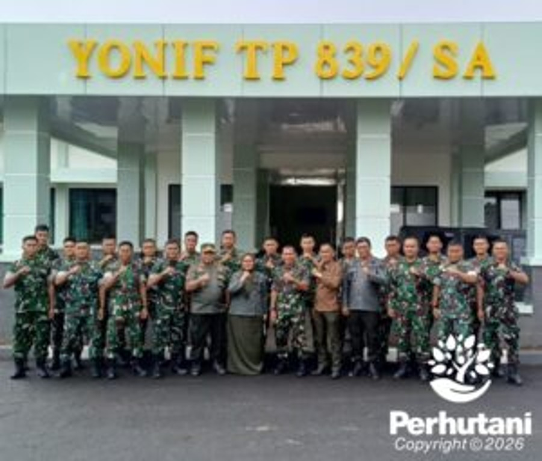

PERHUTANI, KUNINGAN (23/01/2026) | Perum Perhutani KPH Kuningan terus membangun dan memperkuat sinergitas dengan berbagai pihak, salah satunya dengan Tentara Nasional Indonesia (TNI). Hal tersebut diwujudkan melalui kegiatan silaturahmi dan koordinasi bersama Batalyon Infanteri Teritorial Pembangunan Yonif TP 839 Kuningan pada Jumat (23/01).
Dalam kegiatan tersebut, Administratur Perhutani KPH Kuningan, Ibu Siti Kasanah, S.Hut., hadir bersama Wakil Administratur, Kepala Sub Seksi Hukum, Kepatuhan, Agraria dan Komunikasi Perusahaan (KSS HKAKP), serta Komandan Regu (Danru). Kehadiran jajaran Perhutani KPH Kuningan disambut langsung oleh Komandan Yonif TP 839 Kuningan beserta jajaran dalam suasana penuh keakraban dan kebersamaan.
Pertemuan ini membahas penguatan sinergi kelembagaan antara Perhutani dan TNI, khususnya dalam menjaga keamanan kawasan hutan. Selain itu, kedua belah pihak juga berdiskusi mengenai peran bersama dalam mendukung program ketahanan pangan nasional.
Administratur KPH Kuningan, Siti Kasanah, menyampaikan bahwa Perhutani siap bersinergi dengan TNI dalam mendukung ketahanan pangan melalui pengelolaan sumber daya hutan yang optimal, produktif, dan berkelanjutan, serta pemberdayaan masyarakat sekitar hutan. “Sinergitas ini diharapkan mampu memberikan manfaat nyata bagi masyarakat sekaligus tetap menjaga kelestarian hutan,” ujarnya.
Sementara itu, Komandan Yonif TP 839 Kuningan, Letkol Inf Era Borhan Wiantoro, menyambut baik kerja sama yang terjalin dengan Perhutani KPH Kuningan. Ia menegaskan bahwa TNI siap mendukung program-program Perhutani, khususnya yang berkaitan dengan ketahanan pangan, keamanan hutan, dan pembangunan wilayah.
Melalui kegiatan ini, diharapkan terjalin kerja sama yang semakin solid antara Perhutani KPH Kuningan dan Yonif TP 839 Kuningan dalam menjaga kelestarian hutan, mendukung ketahanan pangan, serta mendorong pembangunan wilayah yang berkelanjutan.
Editor: WK
Copyright © 2026 Warta Nusantara Barat